Системы зажигания автомобиляДанная статья описательная и универсальна для всех марок автомобилей В состав системы зажигания входят узлы и соединительные провода, необходимые для формирования и подачи высокого напряжения на свечи зажигания в заданной последовательности. ПРИНЦИП РАБОТЫ СИСТЕМЫ ЗАЖИГАНИЯВ состав системы зажигания входят узлы и провода, необходимые для формирования высокого напряжения (до 40 000 В и выше). Во всех системах зажигания на плюсовой вывод катушки зажигания подается напряжение бортовой сети, а ее минусовой вывод через коммутатор подключается на "массу" автомобиля. Когда минусовой вывод катушки зажигания подключен на "массу", через первичную, низковольтную обмотку катушки зажигания течет ток, возбуждающий магнитное поле. При разрыве цепи магнитное поле исчезает, индуцируя во вторичной (высоковольтной) обмотке катушки зажигания высоковольтный импульс. В системах зажигания классической схемы замыкание и размыкание контакта катушки зажигания на "массу" осуществляется механическим прерывателем. В электронных системах зажигания это делает электронный модуль по сигналу магнитоэлектрического датчика, или триггера. Катушки зажигания Катушка зажигания — это "сердце" любой системы зажигания. В этой катушке создается высоковольтный импульс за счет электромагнитной индукции. Многие конструкции катушек зажигания состоят из двух отдельных, но электрически соединенных друг с другом, медных обмоток. Другие представляют собой классические трансформаторы — в них первичная и вторичная обмотки полностью изолированы друг от друга (рис. 5.1). Сердечник (магнитопровод) катушки зажигания набирается из пластин трансформаторного железа (тонких листов магнитомягкого железа). Сердечник увеличивает индуктивную связь между катушками. На наборном сердечнике намотана обмотка, состоящая приблизительно из 20 ООО витков тонкого провода (калибра, примерно, 42-AWG). Эта обмотка 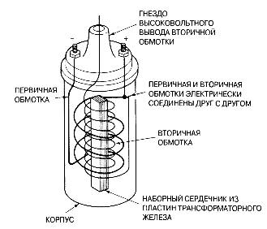Рис. 5.1. Конструкция катушки зажигания с масляным охлаждением. Обратите внимание на то, что первичная и вторичная обмотки электрически соединены друг с другом. Полярность выводов катушки определяется направлением ее намотки называется вторичной (повышающей) обмоткой катушки зажигания. Поверх нее намотана обмотка, состоящая приблизительно из 150 витков толстого провода (калибра, примерно, 21-AWG). Эта обмотка называется первичной обмоткой катушки зажигания. Во многих конструкциях катушек зажигания эти обмотки окружены тонким металлическим экраном, изолированы электроизоляционной бумагой и помещены в металлический корпус. Корпус катушки зажигания обычно заполняется трансформаторным маслом с целью лучшего охлаждения. В HEI-системах зажигания компании GM (high-energy ignition — система зажигания с искрой повышенной мощности) используются так называемые Е-катушки, которые по конструкции представляют собой катушку зажигания, намотанную на наборном железном сердечнике Е-образной формы и залитую эпоксидной смолой. Охлаждение Е-катушки — воздушное (рис. 5.2 и 5.3). 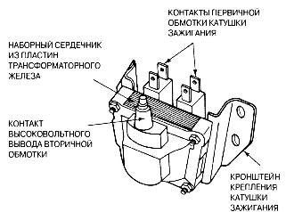Рис. 5.2. Пример Е-катушки зажигания с эпоксидной заливкой и воздушным охлаждением 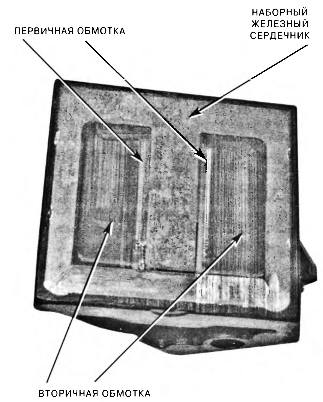
Как в катушке зажигания создается напряжение 40 киловольт Напряжение на плюсовой контакт первичной обмотки катушки зажигания поступает с плюсовой клеммы аккумуляторной батареи через замкнутые контакты замка зажигания. Минусовой контакт первичной обмотки замывается на "массу" через электронный модуль управления зажиганием. Когда эта цепь замкнута, через первичную обмотку катушки зажигания течет ток величиной, примерно, от 3 А до 8 А. Этот ток создает в катушке зажигания мощное магнитное поле. Когда контакт первичной обмотки катушки зажигания на "массу" разрывается, магнитное поле резко убывает, наводя во вторичной обмотке катушки высоковольтный импульс — напряжением от 20 000 В до 40 000 В и током небольшой (от 20 мА до 80 мА) силы. Этот высоковольтный импульс через контакты распределителя зажигания поступает по высоковольтным проводам на свечи зажигания. Чтобы проскочила искра, катушка зажигания должна "зарядиться" от низковольтной первичной сети и снова разрядиться. 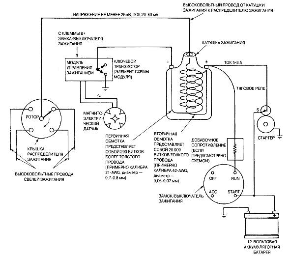Рис. 5.4. Схема типичной системы зажигания с электронным прерывателем, в которой используется добавочное сопротивление и механический распределитель зажигания. С целью защиты катушки зажигания от перегрева на пониженных оборотах двигателя во многих электронных системах зажигания вместо добавочного сопротивления используются специальные электронные схемы, которые работают в составе электронного модуля управления зажиганием Схема, управляющая током первичной обмотки катушки зажигания — подключающая ее к источнику питания и отключающая ее от него, называется первичной цепью системы зажигания. Схема, обеспечивающая формирование и распределение высокого напряжения, создаваемого в высоковольтной обмотке катушки зажигания, называется вторичной цепью системы зажигания (рис. 5.4 и 5.5). 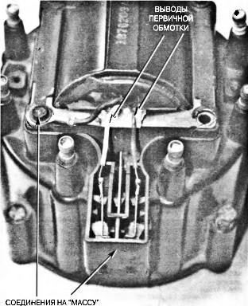
Рис. 5.5. Пример типичной катушки зажигания НЕ1-системы зажигания компании General Motors, установленной в крышке распределителя. При замене катушки зажигания и/или распределителя зажигания обязательно проверьте, чтобы клемма массы была переставлена со старой крышки распределителя на новую. Отсутствие надлежащего контакта с массой может привести к повреждению катушки зажигания. В HEI-системах зажигания используются два варианта катушек зажигания. Первый вариант отличается тем, что выводы первичной обмотки имеют изоляцию красного и белого цвета — он показан на фотографии. Во втором варианте катушка включена в обратной полярности, изоляция выводов — красного и желтого цвета Работа первичной цепи Для формирования импульса высокого напряжения во вторичной обмотке катушки зажигания необходимо замкнуть и разомкнуть цепь первичной обмотки. Замыкание и размыкание первичной цепи зажигания осуществляется силовым транзистором (электронным прерывателем), установленным в электронном модуле управления зажиганием, управление которым, в свою очередь, осуществляется по сигналам различных датчиков: • Магнитоэлектрический датчик положения ротора распределителя зажигания (импульсный генератор). Этот датчик, установленный в корпусе распределителя зажигания, создает сигнал переменного напряжения, по которому производится переключение транзисторного прерывателя в модуле управления зажиганием (рис. 5.6 и 5.7). 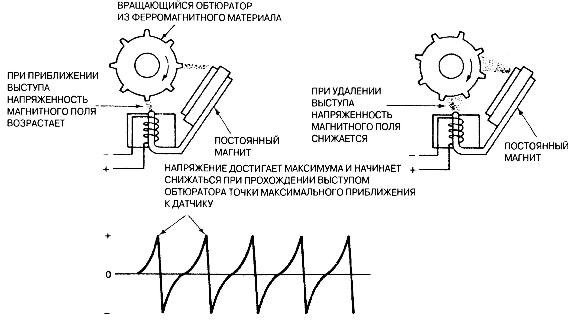Рис. 5.6. Принцип работы магнитоэлектрического датчика (генератора импульсов). На приведенном внизу рисунке показана типичная осциллограмма выходного напряжения этого магнитоэлектрического датчика. Импульсный сигнал с выхода датчика поступает в электронный модуль управления зажиганием, который разрывает контакт первичной обмотки на "массу" в тот момент, когда напряжение импульса достигает максимума и начинает снижаться (это происходит в тот момент, когда зубец стального зубчатого диска начинает удаляться от катушки датчика) Рис. 5.7. Импульсный сигнал, поступающий с выход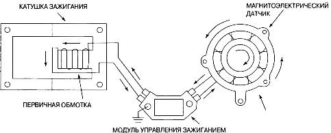а магнитоэлектрического датчика, управляет работой электронного модуля, который замыкает вывод первичной обмотки катушки зажигания на "массу" и размыкает его, генерируя высоковольтный импульс во вторичной цепи • Датчик Холла. Установленные в корпусе распределителя зажигания или рядом с коленчатым валом интегральные датчики Холла формируют прямоугольный импульсный сигнал. Импульсный сигнал с выхода датчика, содержащий информацию о положении поршней и скорости вращения двигателя, поступает в модуль управления зажиганием и бортовой компьютер (рис. 5.8 и 5.9). 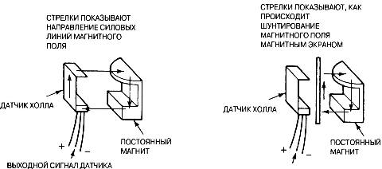Рис. 5.8. В интегральном датчике Холла используются металлические дисковые обтюраторы, шунтирующие силовые линии магнитного поля, экранируя от него датчик Холла, изготовленный по микроэлектронной технологии вместе со схемой усиления. Все интегральные датчики Холла формируют прямоугольные импульсы, обеспечивающие очень точную синхронизацию работы модуля управления зажиганием 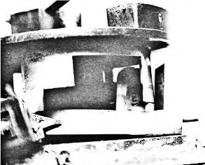
Рис. 5.9. Зубец обтюратора на вращающемся роторе проходит в зазоре между интегральным датчиком Холла и постоянным магнитом • Магнитоэлектрические датчики углового положения коленчатого вала. В этих датчиках сигнал формируется за счет изменения напряженности магнитного поля, окружающего катушку датчика. Этот сигнал, содержащий информацию о положении поршней и скорости вращения двигателя, поступает в модуль управления зажиганием и бортовой компьютер (рис. 5.10). 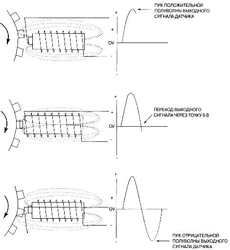Рис. 5.10. Датчик переменного магнитного сопротивления (VRS) представляет собой катушку индуктивности, намотанную на постоянном магните. Зубцы магнитного обтюратора, закрепленного на коленчатом валу (или распределительном валу), проходя мимо катушки датчика, вызывают изменение напряженности магнитного поля, окружающего ее. Когда выступ обтюратора приближается к катушке, напряженность магнитного поля возрастает, потому что в металле концентрация силовых линий магнитного поля выше, чем в воздухе • Оптические датчики. Эти датчики бортовой компьютерной системы управления двигателем изготавливаются на основе светодиода и фототранзистора. Вращающийся диск с прорезями (обтюратор) модулирует поток излучения светодиода, в результате чего на выходе фотоприемника появляется импульсный сигнал. В оптических датчиках (обычно устанавливаемых в корпусе распределителя зажигания), как правило, предусматривается два ряда прорезей, что обеспечивает формирование отдельных сигналов для опознавания цилиндров (сигнал низкого разрешения) и прецизионного измерения угла поворота ротора распределителя зажигания (сигнал высокого разрешения) (рис. 5.11). 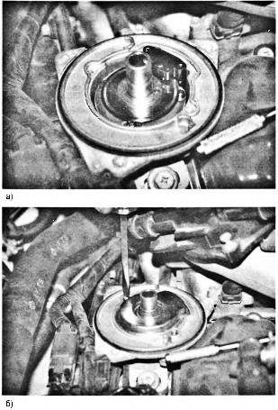Рис. 5.11. Оптический датчик-распределитель на шестицилиндровом V-образном двигателе Nissan объемом 3 литра со снятым оптическим экраном (а). Перед установкой ротора датчик закрывают оптическим экраном (6) Бесконтактные системы зажиганияВ системе зажигания с непосредственным подключением катушки зажигания к свечам зажигания — называемой также бесконтактной системой зажигания (DIS) или просто электронной системой зажигания (IE) — распределитель зажигания отсутствует. В этой системе зажигания оба вывода катушки подключены каждый к своему цилиндру, причем цилиндры выбраны так, что их рабочие циклы находятся в про-тивофазе друг с другом (рис. 5.12). Это означает, что искра возникает одновременно в обеих свечах зажигания! Когда в одном из цилиндров (например, №6) идет такт сжатия, в другом цилиндре (№3) — в то же самое время — идет такт выпуска отработанных газов. 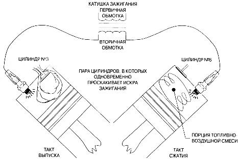
Рис. 5.12. В бесконтактной системе зажигания искра возникает одновременно в двух цилиндрах — рабочем, в котором идет такт сжатия, и парном, или оппозитном, в котором в это же самое время идет такт выпуска отработанных газов. В типичном двигателе для возникновения холостой искры в цилиндре, в котором идет такт выпуска, обычно достаточно напряжения от 2 до 3 кВ. Остальная энергия, накопленная катушкой зажигания, расходуется в том цилиндре, в котором идет такт сжатия (типичное напряжение составляет от 8 до 12 кВ) Оптический датчик-распределитель не любит внешней засветки Принцип работы оптического датчика-распределителя системы зажигания заключается в импульсном освещении фототранзистора датчика излучением, создаваемом свето-диодом. В конструкции оптического датчика-распределителя зажигания, как правило, между ротором распределителя зажигания и кольцевым оптическим обтюратором, модулирующим поток излучения светодиода, устанавливается оптический экран. Искра, проскакивающая между контактом ротора и контактами высоковольтных проводов в крышке распределителя зажигания в процессе работы распределителя, создает паразитную засветку. Оптический экран защищает оптический датчик от внешней засветки, создаваемой искрением контактов распределителя зажигания. Если выполняя техническое обслуживание, вы забудете установить оптический экран на место, оптический сигнал датчика из-за внешней засветки будет ослаблен, что может привести к нарушению нормальной работы двигателя. Такую неисправность трудно выявить из-за отсутствия внешних признаков. Не забывайте, что в оптическом датчике-распре-делителе между кольцевым оптическим обтюратором и ротором обязательно должен стоять оптический экран. Искра, возникающая в такте выпуска, называется холостой искрой, потому что она не выполняет полезной работы, а обеспечивает только замыкание на "массу" вывода вторичной обмотки катушки зажигания. Напряжение, необходимое для пробоя разрядного промежутка свечи зажигания цилиндра №3 (в такте выпуска), находится в пределах всего лишь от 2 кВ до 3 кВ и обеспечивает соединение на землю вторичной цепи зажигания. Остальная энергия, накопленная катушкой зажигания, расходуется в том цилиндре, в котором идет такт сжатия. В каждой паре свечей зажигания одна свеча включена в прямой полярности, а другая — в обратной полярности. Обратная полярность включения не сильно отражается на ресурсе свечи. Но выход из строя одного из высоковольтных проводов или одной из свеч зажигания может привести к неработоспособности сразу двух цилиндров. ПРИМЕЧАНИЕ В системе зажигания с механическим распределителем зажигания существуют два разрыва во вторичной цепи зажигания: первый — между контактами ротора и клеммами, установленными в крышке распределителя (находится под атмосферным давлением), и второй — разрядный промежуток между электродами свечи зажигания (находится под повышенным давлением в такте сжатия). В бесконтактной системе зажигания во вторичной цепи также имеются два промежутка: один — разрядный промежуток между электродами свечи зажигания цилиндра, в котором идет такт сжатия, и второй — разрядный промежуток между электродами свечи зажигания цилиндра, в котором идет такт выпуска. Для управления работой бесконтактной системы зажигания необходим датчик (обычно датчик углового положения коленчатого вала), по сигналу которого осуществляется синхронизация электронного коммутатора высоковольтного напряжения (рис. 5.13). 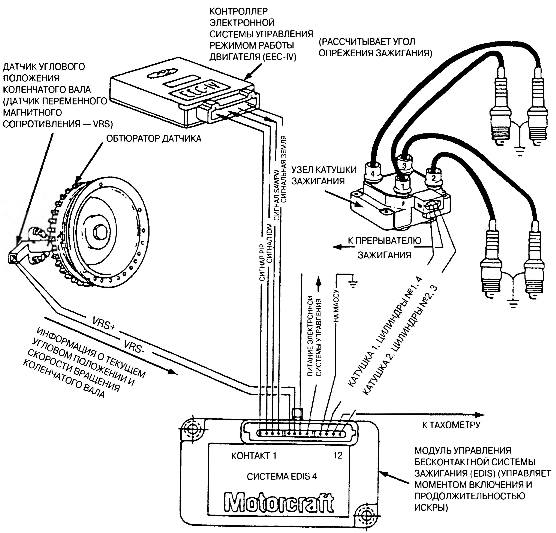Рис. 5.13. Функциональная схема типичной бесконтактной (EDIS) системы зажигания четырехцилиндрового двигателя, которой оснащаются автомобили компании Ford. Датчик угла поворота коленчатого вала, называемый датчиком переменного магнитного сопротивления (VRS), передает информацию об угловом положении коленчатого вала и скорости его вращения в модуль управления зажиганием (EDIS). В бортовой компьютер передается преобразованный сигнал — сигнал PIP, по которому осуществляется слежение за синхронизацией системы зажигания. По сигналу PIP компьютер рассчитывает временные параметры синхронизации системы зажигания и передает в модуль управления зажиганием EDIS команду о том, когда подавать высокое напряжение на свечу зажигания. Этот сигнал управления называется командой установки угла опережения зажигания — сигнал SAW Скорректировать угол опережения зажигания путем перемещения датчика углового положения коленчатого вала невозможно, поскольку он делается нерегулируемым. СИСТЕМА ЗАЖИГАНИЯ ТИПА "КАТУШКА НА СВЕЧЕ"В системе зажигания типа "катушка на свече" для каждой свечи зажигания предусмотрена отдельная катушка зажигания (рис. 5.14). В системе зажигания с отдельными для каждой свечи катушками зажигания отсутствуют высоковольтные провода, которые часто являются источниками электромагнитных помех, нарушающих работу бортовой компьютерной системы управления. Бортовой компьютер замыкает минусовой вывод каждой катушки в надлежащий момент. 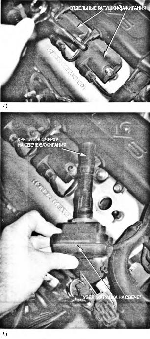 Рис. 5.14. Система зажигания типа "катушка на свече" |